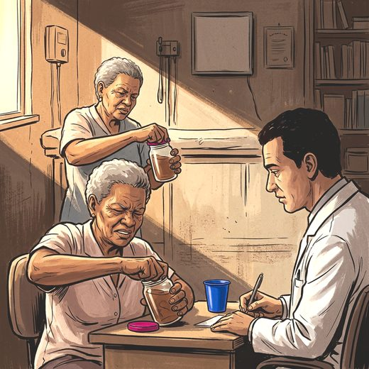

Consulta rápida à beira do leito
Condutas, doses e interações.
Referências da aula · 4
- Cruz-Jentoft AJ, Bahat G, Bauer J, Boirie Y, Bruyère O, Cederholm T, et al. Sarcopenia: revised European consensus on definition and diagnosis. Age Ageing. 2019;48(1):16-31. PMID 30312372. doi:10.1093/ageing/afy169.PubMedDOI
- Kirk B, Cawthon PM, Arai H, Ávila-Funes JA, Barazzoni R, Bhasin S, et al. The conceptual definition of sarcopenia: Delphi consensus from the Global Leadership Initiative in Sarcopenia (GLIS). Age Ageing. 2024;53(3):afae052. PMID 38520141. doi:10.1093/ageing/afae052.PubMedDOI
- Clark BC, Manini TM. Sarcopenia =/= dynapenia. J Gerontol A Biol Sci Med Sci. 2008;63(8):829-34. PMID 18772470. doi:10.1093/gerona/63.8.829.PubMedDOI
- Roberts HC, Denison HJ, Martin HJ, Patel HP, Syddall H, Cooper C, et al. A review of the measurement of grip strength in clinical and epidemiological studies: towards a standardised approach. Age Ageing. 2011;40(4):423-9. PMID 21624928. doi:10.1093/ageing/afr051.PubMedDOI
Documentos oficiais
Leis e publicações do Ministério da Saúde sobre o cuidado da pessoa idosa, de acesso livre.
Abrir os documentos